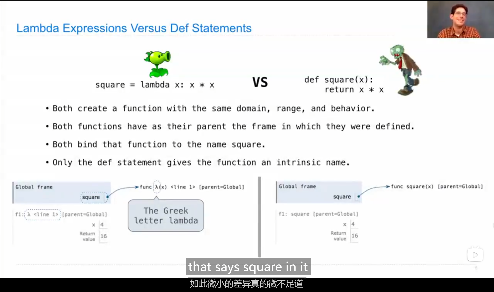
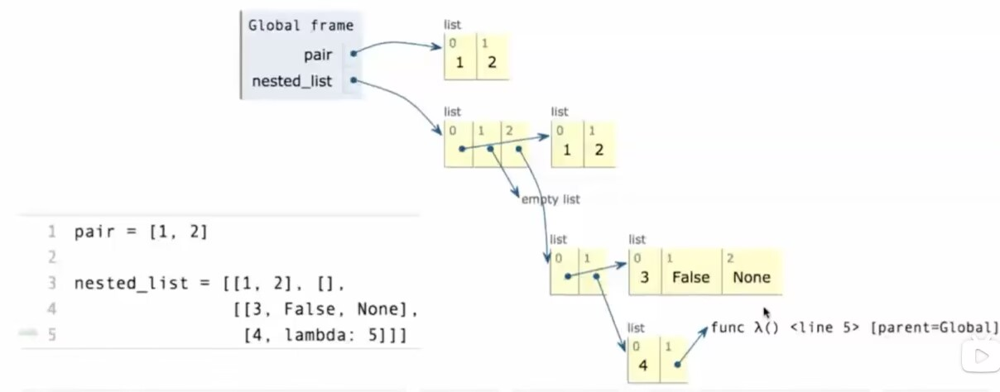
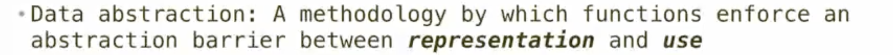
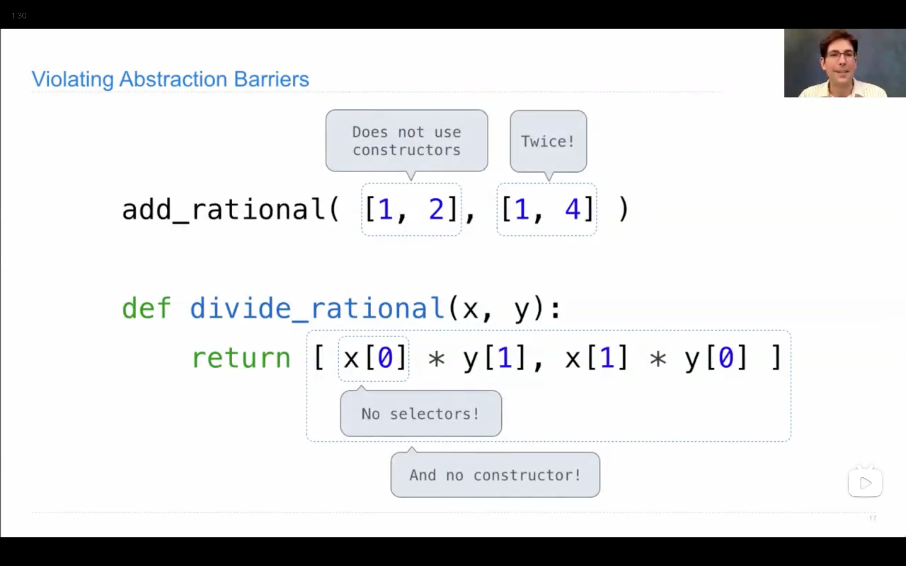
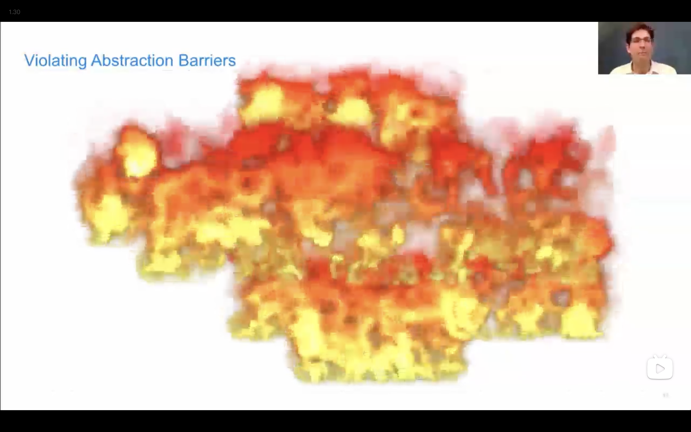

This is a notebook of lectures of CS61A
A course of abstraction
Lecture 2
1.Q: analyse what is the output of the block
2. 从终端调用python mul/add函数/pi值：
3. 执行顺序：
Output: a=2,b=3Rules:
-
Evaluate all expressions to the right of= from left to right.
-
Bind all names to the left of = to the resulting values in the current frame
4. How to define a function:
Plus: 如果在括号内直接给变量赋值，则为”默认值“，即若无特殊声明，默认为默认值。Lecture 3
1.None Indicateds that Nothing is Returned
-
The special value None represents nothing in Python
-
A function that does not explicitly return a value will return None Careful: None is not displayed by the interpreter as the value of an expression.
Q: analyse what is the output of the following code
A
2.python交互界面： 例如以下代码：
如果要查看q,r的值，我们通常会采取print函数，但是！交互模式！
Lecture 4
1.assert语句
E.g. square_area(-2)报错！
2.用自定义函数传递函数名
大概需求：五项求和（自然数/自然数的立方）
def cube(k):
return pow(k,3)
def identity(k):
return k
def sum_naturals(n,term):
sum,k = 0 , 1
while k <= n:
sum , k = sum + k , k + 1
return sum
函数也可以作为return 后的值被返回
Lecture 5
1. Environment!
def make_adder(n):
def adder(k):
return n+k
return adder
adder_three=make_adder(3)
result=adder_three(4)
result2=adder_three(5)
adder_four=make_adde(4)
result3=adder_four(4)
Explain:
每个函数都有运行的环境框架，正常情况下，我们定义的函数是全局框架（global），而嵌套定义的函数，如代码中的make_adder和adder ,make_adder是在全局框架中运行的，而adder是在make_adder的框架中运行的，因此，我们赋予adder_three函数类型，之后再多次给其值，并不会改变其parent frame
2.Lambda定义函数
一张图浅浅带过

Lecture 7
一些调用函数的规则
if else语句太低级，怎么办？
想写高级的！
def if_(c,t,f):
if c:
return t
else:
return f
from math import sqrt
def real_sqrt(x):
return if_(x>=0,sqrt(x),0);
调用表达式不允许跳过计算部分！！！
因此其实它会直接计算x>=0 和sqrt这俩，不会作为条件语句和函数跑到if_里面去
不过可以在里面丢进去and 和 or这俩的语句
Lecture 8
Function Decorators
def trace1(fn):
def traced(x):
print("Calling",fn,'on argument',x)
return fn(x)
return traced
@trace1
def square(x):
return x*x
@trace1
def sum_squares_up_to(n):
k=1
total=0
while k<=n:
total,k=total+square(k),k+1
return total
>>> sum_squares_up_to(5)
Calling <function sum_squares_up_to at 0x101712480> on argument 5
Calling <function square at 0x101712340> on argument 1
Calling <function square at 0x101712340> on argument 2
Calling <function square at 0x101712340> on argument 3
Calling <function square at 0x101712340> on argument 4
Calling <function square at 0x101712340> on argument 5
55
Actually
This
Lecture 10
递归！
终于会用lambda了，但是要注意调用
def inverse_cascade(n):
grow(n)
print(n)
shrink(n)
def f_then_g(f,g,n):
if n:
f(n)
g(n)
grow = lambda n: f_then_g(grow,print,n//10)
shrink = lambda n: f_then_g(print,shrink,n//10)
以及递归要注意什么时候离开递归，建议把离开条件先写。
Lecture 11
list !!
int a[100]
python的数组（一些基本的定义的事情）：
>>>digits= [1,2,3,4]
#we can get the number of elements:
>>>len(digits)
4
>>>[2,7]+digits*2
[2,7,1,2,3,4,1,2,3,4]#write twice
#Nested lists
>>>pairs[[30,40],[50,60]]
>>>pairs[1]
[50,60]
>>>pairs[1][0]
50 #amazing to C
还有一些C没有的内置功能
#whether an element in a compound value
>>>digits = [1,8,2,8]
>>>1 in digits
True
>>>5 not in digits
True
>>>5 in digits
False
>>>not (5 in digits)
True
#in doesn't find subsequece ,but a single element
#like:
>>>[1,8] in digits
False
>>>[1,8] in [1,[1,8],8]
True
#but
>>>[1,8] in [1,[[1,8]],8]
False
#don't hide so deep
#a piece with "while"
def count(s,value):
total,index=0,0
while index<len(s):
element = s[index]
if element == value:
total =total + 1
index += 1
return total
#and we can use for statement !
def count(s,value):
total=0
for element in s:
if element == value:
total += 1
return total
#two lines less than the former one !
for <name> in <expressions>:
<suite>
>>>pairs=[[1,2],[2,2],[2,3],[4,4]]
>>>same_count=0
>>>for x,y in pairs:##give each element a name —— sequence unpacking!
if x == y:
same_count += 1
>>>same_count
2
##two figures in one element
def cheer(n):
for _ in range(5):
'''
range(5)=[0,1,2,3,4]
use _ or (a blank) when we don't want to use that name
'''
print('Go bears!')
Go bears!
Go bears!
Go bears!
Go bears!
Go bears!
>>>odds = [1,3,5,7,9]
>>> [x+1 for x in odds]
[2,4,6,8,10]
>>> [x for x in odds if 25%x == 0]
[1,5]
>>> [x+1 for x in odds if 25%x == 0]
[2,6]
# amazing to C
Lecture 12

好复杂一数组，这在C我都不敢想
slice
就是获取一个数组里面一些东西
比如
oods=[1,3,5,7,9]
# want elements with index of 1,2
>>> list(range(1,3))
[1,2]
>>> [odd[i] for i in range(1,3)]
[3,5]
>>> odd[1:3] #slicing operator
[3,5] #so many methods to reach the destination
#if blank a begin/end ,it would be set as the first/last
some other functions
1. sum
>>>sum([2,3,4])
9
>>>sum([2,3,4],5)
14
# try to understand why the output is [2,3,4]:
sum([[2,3],[4]],[])
- max
- all
>>>[x<5 for x in range(5)]
[True,True,True,True,True]
>>>all([x<5 for x in range(5)])
True
>>>all(range(5))
False # bool(0) is False
string
use " " or ' '
Dictionary
a kind of special sequence
>>>numerals={'I':1, 'V':5, 'X':10}
"""
the value of dictionary can be list ,string or others
the key could be numbers as well,but not list
"""
>>>numerals
{'I': 1, 'V': 5, 'X': 10}
>>>numerals[V]
5
>>>list(numerals)
['I','V','X']
>>> numerals.values()
dict_values([1, 5, 10])
>>>sum(numerals.values())
16
list(numerals.values())
[1,5,10]
dictionary comprehensions
# {<key exp>:<value exp> for <name> in <iter exp> if <fliter exp>}
#short version:{<key exp>:<value exp> for <name> in <iter exp>}
# like
{x*x : x for x in [1,2,3,4,5] if x>2 }
{9:3, 16:4, 25:5}
Lecture 13
顺便附上math库吧 : 菜鸟教程Data abstraction
一个有些抽象的思想，我不太清楚我是否完全理解

例子：处理分数的加减乘除：
# rational(n,d) :returns a rational number x
# numer(x) : returns the numerators of x
# denom(x) : returns the denominator of x
def mul_rational(x,y):
return rational(numer(x)*numer(y),demon(x)*demon(y))
An example of violating data abstraction:


第一次看这教授红温😋